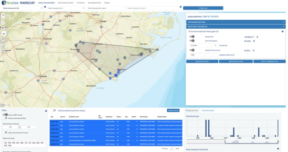
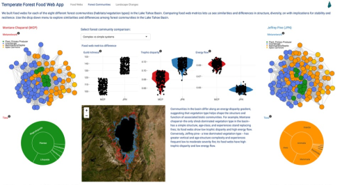

MEASURING TRENDS
Quantifying Local Biodiversity Trends from Integrated Data Sources
Main Partner(s): California Academy of Sciences, Center for Biodiversity and Community
In collaboration with the California Academy of Sciences, Elimia is building an engine to quantify temporal trends in biodiversity from a combined database of digitized museum collection records and community-contributed observations for a multitude of species and ecosystems across areas of conservation interest in California. Trends are estimated for a variety of species-level and ecological community-level metrics via comparisons with historical and regional baselines, all the while accounting for biases in the frequency and intensity of observation. A focus on the detection of biodiversity changes indicative of regeneration opportunities, successful management actions, and early warning signals across core management units will enable the engine to provide locally relevant and actionable biodiversity insights.

DEVELOPING METRICS
Developing Metrics to Quantify Biodiversity Net Gains
Main Partner(s): Ecosystem Services Market Consortium, Tetra Tech
Ecosystem Services Market Consortium (ESMC), a leader in advancing market-based solutions that drive environmental sustainability, is looking to add biodiversity impact programming into existing carbon and water programs to promote overall ecosystem health. To support the goal of adding biodiversity impacts to existing credit programs, Elimia is supporting ESMC and collaborating with Tetra Tech on the development of a Biodiversity Metric designed to quantify the potential net biodiversity gains of different best management practices implemented by agricultural producers. In this project, Elimia’s role has been to synthesize and mobilize the biodiversity knowledge and data necessary to understand and quantify the impacts of different practices on biodiversity in agroecological systems.
MAPPING DISTRIBUTIONS
Mapping the Distributions of Rare and Threatened Species
California Department of Fish and Wildlife, Conservation Analysis Unit
The Conservation Analysis Unit of the California Department of Fish and Wildlife is undertaking the Range and Distribution Mapping and Analysis Project (RADMAP), with the objective to develop and maintain a library of species habitat models (SHM) and range maps, with a focus on imperiled plants and animals. Species habitat models (SHMs) are machine learning models that identify locations across the landscape where habitat conditions are most likely to support a given species. These models fit relationships between the relatively few known presence localities of a species and features of the local environment, such as climate, topography, geology, land cover, and land use. SHMs then predict the relative probability that habitat conditions that support the species are present across the broader landscape.
Elimia’s Chief Scientist has been partnering with the California Department of Fish and Wildlife to develop the methodological framework to generate reliable species habitat models from their data and produce models of the distributions of thousands of rare and threatened species of plants in California.

ASSESSING RARITY
Assessing Species Rarity and Extinction Risk
Main Partner(s): NatureServe
NatureServe produce Conservation Assessment Status Ranks at global, national, or subnational scales for nearly all taxa in North America based on Rarity, Threat, and Trend Factors. Elimia has been collaborating with NatureServe to develop a tool to support and significantly speed up NatureServe Conservation Status Assessments. NatureServe’s RARECAT (Rapid Analysis of Rarity and Endangerment Conservation Assessment Tool) facilitates extraction, vetting, and filtering of distribution data, visualization of data quality and quantity over space and time, and calculation of three fundamental factors of Rarity – Range Extent, Area of Occupancy, and Number of Occurrences. Doing so, RARECAT supports higher quality, efficiency, and standardization in Conservation Assessment Status ranking practice for both common and rare taxa.
MEASURING RESILIENCE
Assessing Ecosystem Resilience Under Environmental Change
Main Partner(s): California Academy of Sciences, United States Forest Service
In December of 2020, the California Wildlife Conservation Board funded a collaboration between the California Academy of Sciences and the United States Forest Service with the objective to develop metrics of the current and future resilience of forest wildlife communities to stressors associated with climate change. These metrics will help inform land managers on how different management actions may influence wildlife community resilience into the future, using Sierra Nevada wildlife communities as a case study.
Elimia has been supporting the California Academy of Sciences on this project by providing assistance analyzing, visualizing, and communicating how resilience metrics are calculated and what trends in resilience metrics may imply for wildlife communities in Sierra Nevada forests.
SUPPORTING MANAGEMENT
Detecting Large-scale Biodiversity Patterns to Inform Local Management
Main Partner(s): The Nature Conservancy, Point Conception Institute
In 2017, The Nature Conservancy established the Jack and Laura Dangermond Preserve at Point Conception (Santa Barbara County, California): a place that has long been recognized as harboring a high biodiversity, including numerous imperiled animals, plants, and ecosystems that occur almost exclusively there. In collaboration with The Nature Conservancy’s Point Conception Institute, Elimia is helping to generate the knowledge base necessary to understand what underlies the high biodiversity value at Point Conception, whether it represents an ecological transition zone in California, and what the implications may be under climate change. We are reviewing published evidence and analyzing large-scale biodiversity data at the species and ecosystem levels throughout California to provide a better assessment of this question. Outputs will enable furthering the Dangermond Preserve’s biodiversity management plan and help understand how to manage this key region for the best biodiversity outcomes.